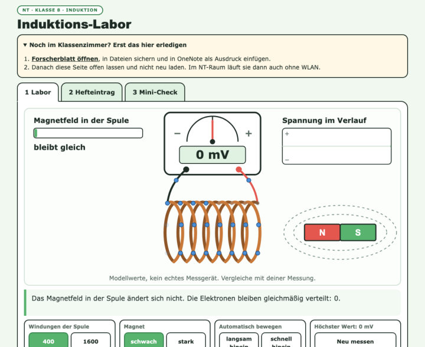
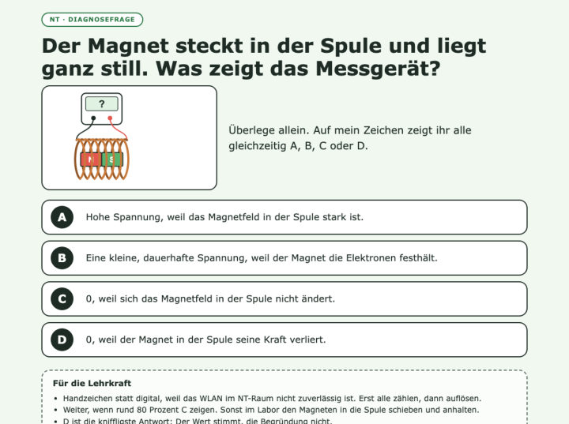
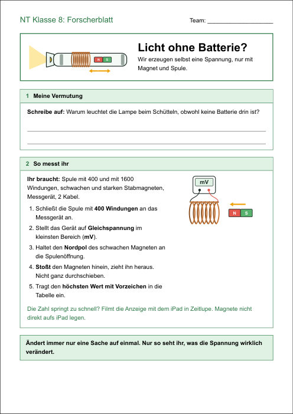
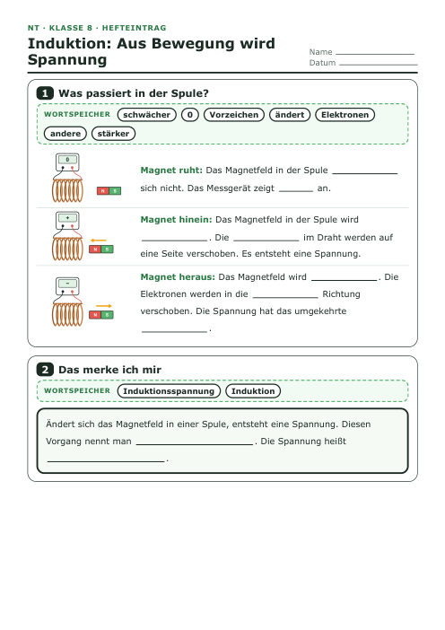
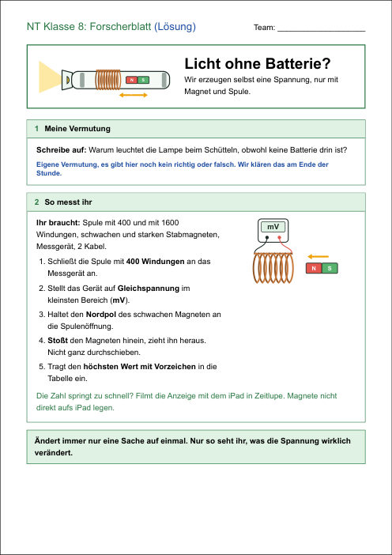
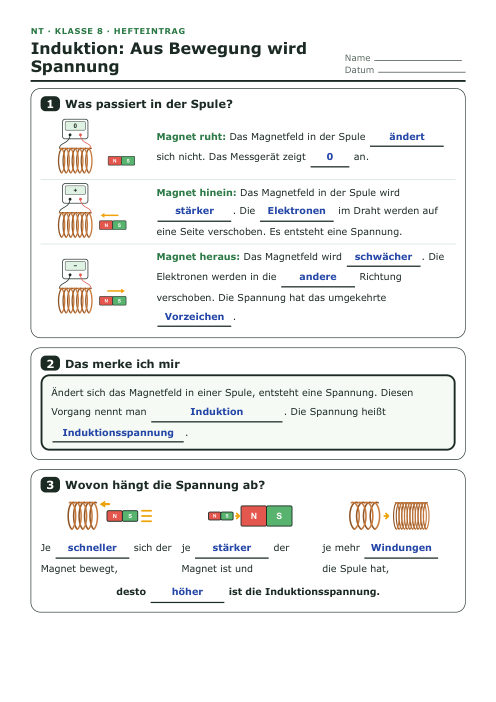
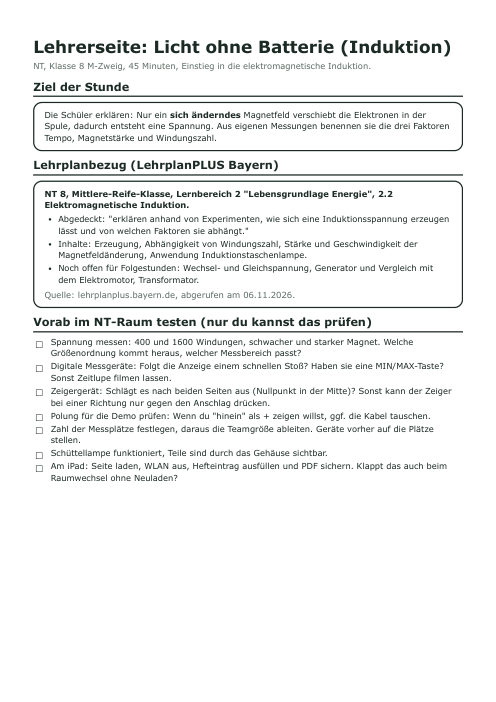

Interaktiv, iPad
Schüler-Seite
Induktions-Labor, Hefteintrag und Mini-Check in einer Datei. Nach dem Laden auch ohne WLAN nutzbar
Im Klassenzimmer laden
Wie kann eine Lampe leuchten, wenn gar keine Batterie drin ist? Mit Magnet und Spule erzeugen wir selbst eine Spannung und finden heraus, wovon sie abhängt.
Von oben nach unten durchgehen. Bei jeder Phase steht, was du brauchst.
QR scannen, Schüler-Seite öffnen, Forscherblatt nach OneNote. Tab offen lassen und in den NT-Raum gehen.
Die Lampe leuchtet ohne Batterie. Brücke zum Motor: Strom macht Bewegung, geht das auch umgekehrt? Vermutung notieren.
Demo mit dem Zeigergerät. Erst vorhersagen lassen: Magnet ruht, hinein, heraus.
Teams messen mit dem Digitalgerät: Tempo, Windungen, Magnetstärke. Am Ende der Rekordversuch.
Im Induktions-Labor sehen, was in der Spule passiert. Die 3 Situationen erklären, dann Diagnosefrage per Handzeichen.
Lücken ausfüllen, prüfen, als PDF sichern und in OneNote einfügen.
Lampe zeigen: Magnet, Spule, LED. Mini-Check. Ausblick auf den Generator. Bei Zeitnot entfällt der Mini-Check.
Alles, was in der Stunde gebraucht wird, mit Lösungen.

Induktions-Labor, Hefteintrag und Mini-Check in einer Datei. Nach dem Laden auch ohne WLAN nutzbar
Im Klassenzimmer laden

Eine Frage mit vier Antworten, jede falsche Antwort zeigt eine typische Fehlvorstellung
Handzeichen: A bis D





Im Klassenzimmer scannen, weil das WLAN im NT-Raum schwach ist. Danach die Seite offen lassen und nicht neu laden. Querformat ist am besten.
Nicht Teil der 45 Minuten. Gut zum Wiederholen zuhause.
LearningApp Induktion Video simpleclub (freiwillig, anspruchsvoll, 7:31 Min.)
So kommen Forscherblatt und Hefteintrag in dein OneNote-Heft.
Alles Ausführliche steht auf der Lehrerseite. Hier das Wichtigste vorab.
Lehrerseite öffnen Lösung Forscherblatt Lösung Hefteintrag